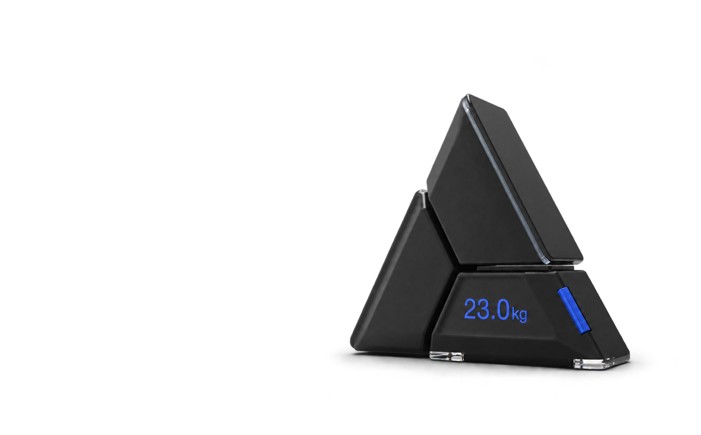
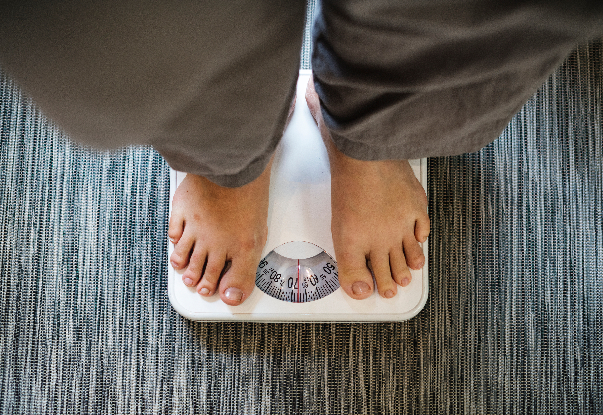
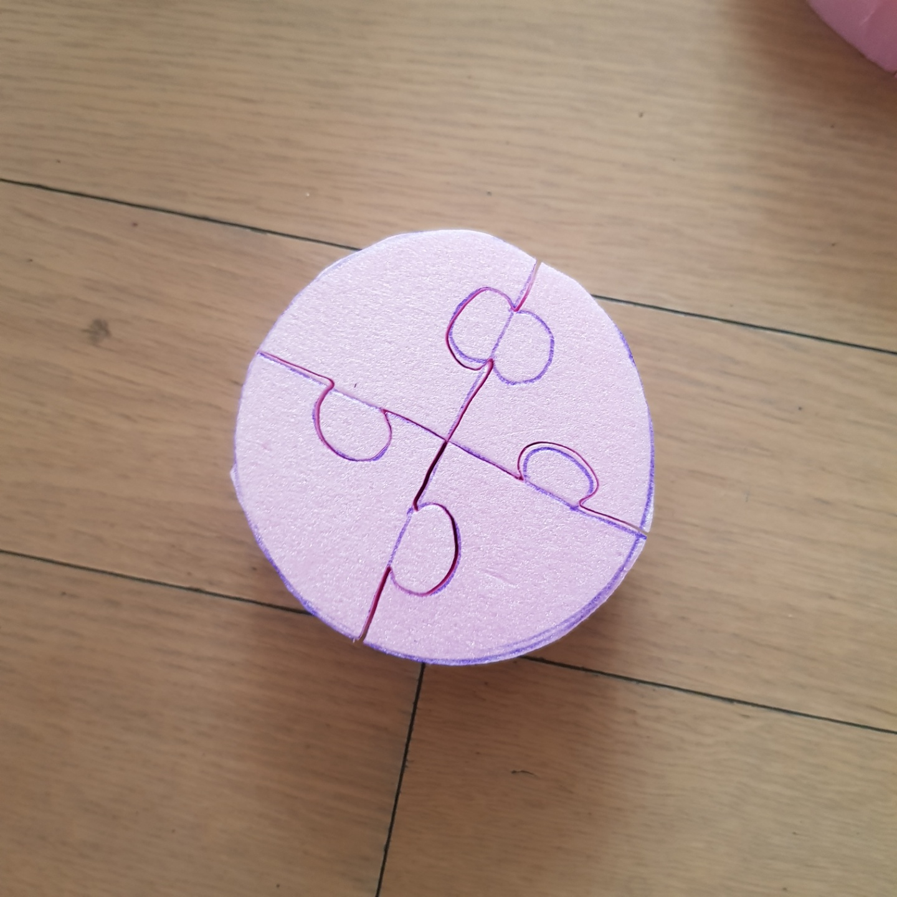
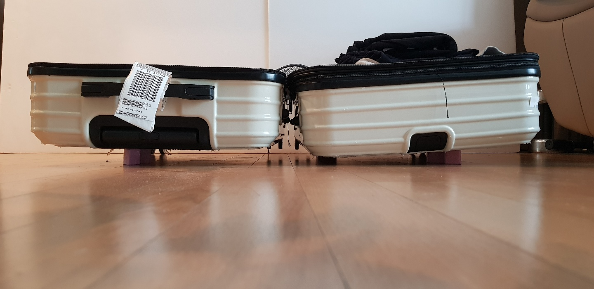
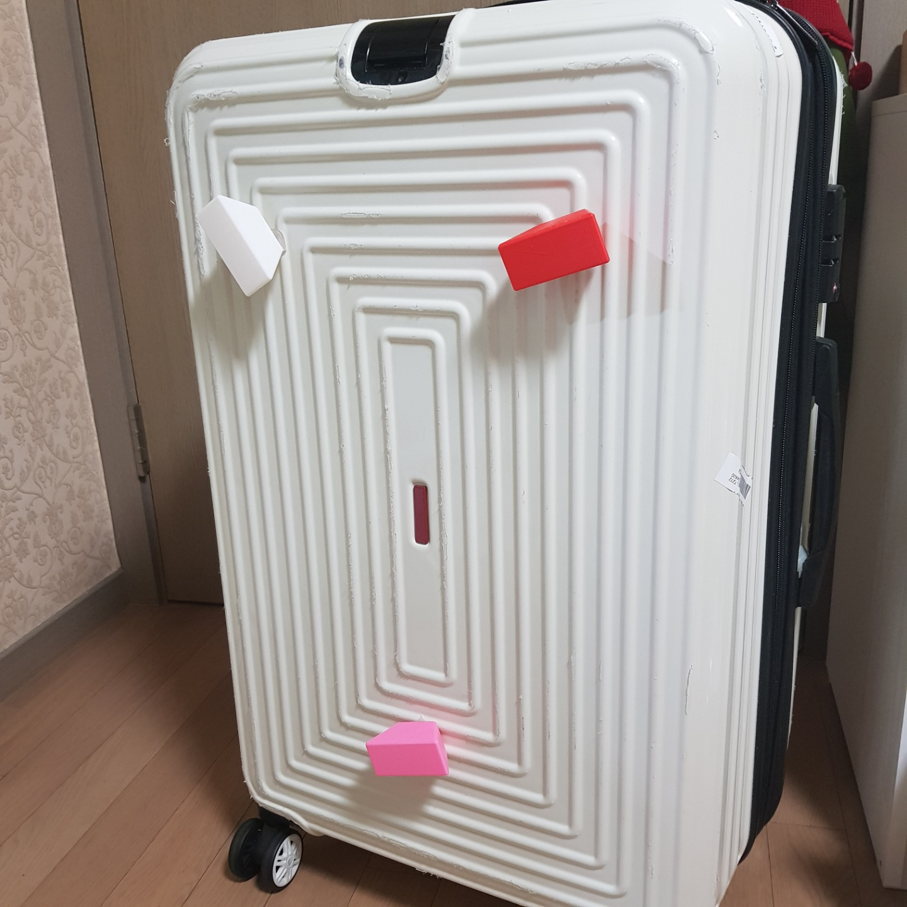
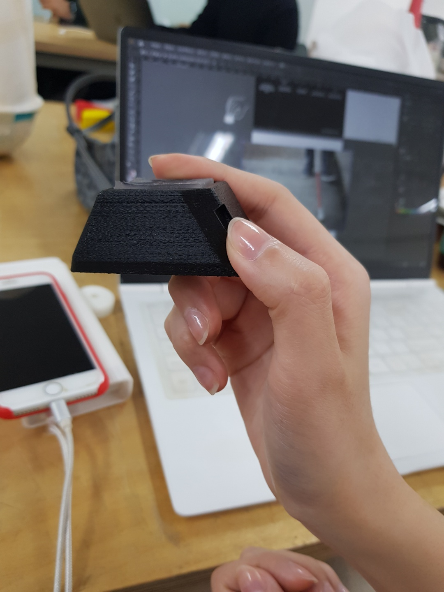
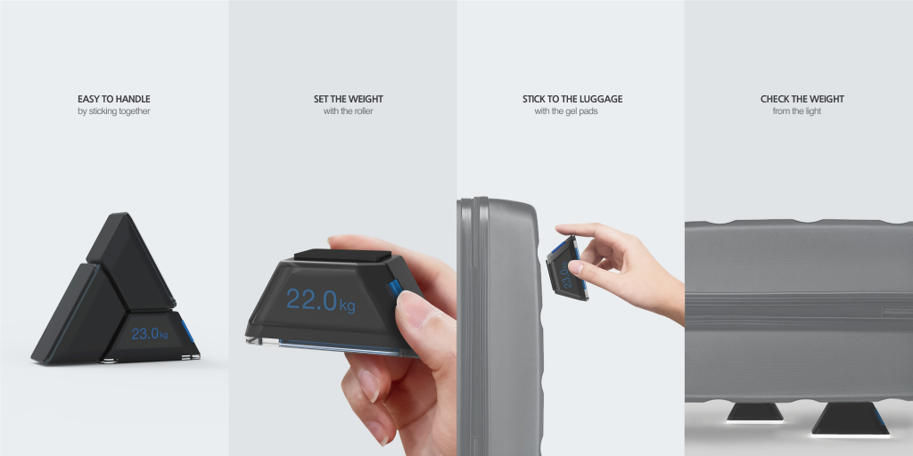
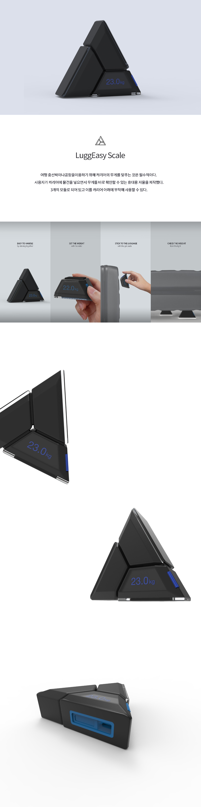
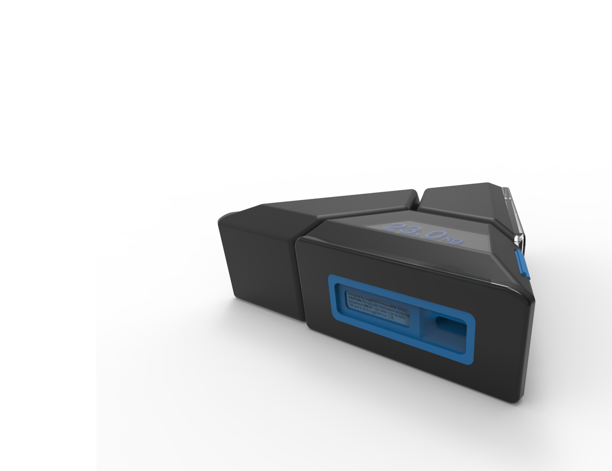

Background
Could weighing luggage while packing be more convenient?
Packing to return home after my exchange program in the United States took nearly five hours. I thought I only needed to pack everything and fly back to Korea, but baggage weight limits forced me to discard unnecessary items. Every trip brings the stress of exceeding the baggage allowance, and packing takes considerable time and effort. I wanted to make this process easier and more efficient.
Research
I conducted in-depth interviews with three frequent travelers who had taken more than ten international trips and three occasional travelers who had taken fewer than ten.
Occasional travelers weighed their luggage on a bathroom scale before departure, but relied on the check-in counter or an airport scale for the return trip. Every participant had experienced either paying an excess baggage fee or urgently moving items into carry-on luggage.
All frequent travelers carried a portable luggage scale, yet they also described several limitations with the product.



1. Stand on a bathroom scale while holding the suitcase.
- The traveler cannot read the scale while holding the suitcase.
- Measurement is impossible without a bathroom scale.
2. Weigh it at the check-in counter.
- The suitcase must be opened in a public space.
- Repacking can delay the people waiting behind.
3. Use an airport luggage scale.
- Not every overseas or regional airport provides one.
- It cannot be used until the traveler reaches the airport.
4. Use a portable luggage scale.
- Holding the suitcase makes precise measurement difficult.
- Packing requires repeatedly opening and closing the suitcase.
- The structure is difficult for children and older adults.
Form Exploration
The work focused on two goals: 1. Can travelers check the weight while packing? 2. Is the product easy to carry?
I reviewed the scale module’s size and form so it could weigh an open suitcase reliably.
I compared economy-class checked-baggage limits across 20 domestic and international airlines. A 28-inch suitcase was the largest commonly accepted size. Based on its unfolded dimensions of 90 × 70 cm, I explored a module form that could support it securely.
The concept measures the suitcase’s total weight by adding the readings from multiple modules placed beneath it. Prototype testing showed that three modules could support the suitcase reliably. I also explored a compact form that keeps the three modules together, prevents them from being lost, and takes up minimal luggage space.

Total
dimensions157.1cm

Weight23kg

Largest
qualifying
suitcase
28 inches

 90cm70cmDimensions when unfolded
90cm70cmDimensions when unfolded
Research across 20 domestic
and international airlines









Solution

Detail




A form for weighing luggage while packing
Three modules sit beneath the suitcase. The trapezoidal form keeps the luggage stable throughout the packing process.
Highly portable individual modules
When combined, the modules form a compact triangle for easy carrying.
A central gel pad connects the modules and can also secure them beneath the suitcase.
Check weight through light, without an external device
The scale is hidden beneath the suitcase, so its display cannot be read directly. After setting a target weight, the built-in light provides immediate feedback without requiring a phone or another device.
A design that prevents errors during use
The recessed charging port guides the plug inward, so it connects easily without needing to look.
Mock-up
A physical mock-up made with ABS 3D printing and acrylic